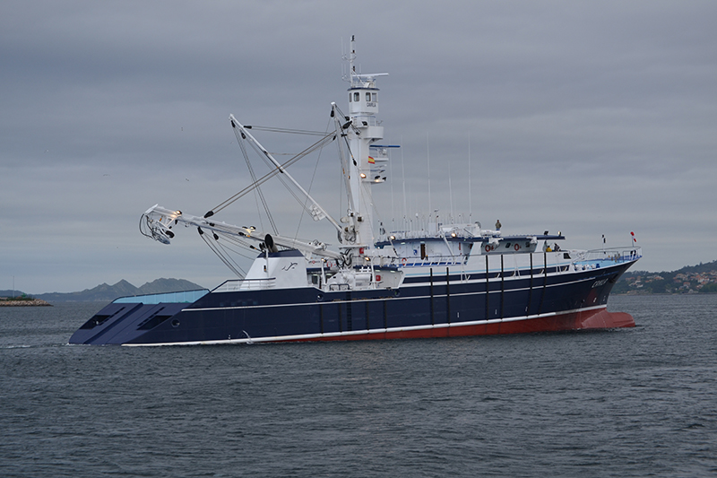
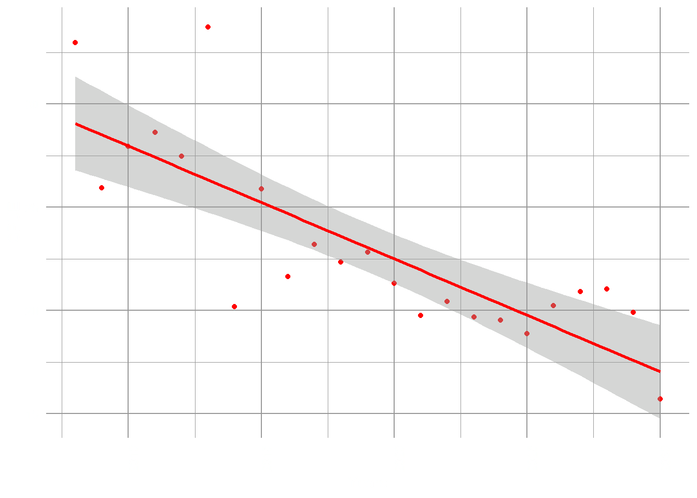

Now that we know what happened to the Mexican Pacific regarding climate change, we show the dynamics we know of the Mexican fishing industry, specifically the pelagic fleet, which is the target of our project. The Mexican pelagic fleet targets tuna, sharks, swordfish, and other pelagic animals using purse seiners and long lines. The fleet comprises around 100 powerful high-seas vessels that can store from 500 to 1,200 tons of catch in one trip.

Figure 1: An example of the fishing vessel deployed in the Pacific by the Pesca Azteca company.
A first exploration to understand their traits is to see if their landings changed over time ( Figure 2 ). In fishery science usually catches are expressed in terms of Catches per Unit of Effort (CPUE) which standardize the catches for the amount of time needed to collect it. We can see a trend of CPUE in Figure 2 .
Figure 2: Trend in fish catches over time in the Mexican Pacific
It is reasonable to expect a decrease in catches, especially after seeing the effect temperature had over the Pacific. Average CPUE shows a significant (p < 0.01) decrease of 22% [95%CI: -50%, -6%] during the warming period ( Figure 2 (a) ), whereas if we look at total CPUE, an overall decreasing trend of 80.7 total CPUE (in metric tons) lost each year ( Figure 2 (b) ). It seems that warming events are negatively influencing the catches. Particularly, summer months are the ones with larger impacts, with overall decreases in CPUE from May to October (Figure 3 (b)).
Figure 3: Change of CPUE in each month from 2008 to 2022. a) compares the seasonal trend of CPUE over time; b) shows the difference between 2008 and 2022, highlighting how CPUE have changed in magnitude
Space-time model of fishing yields
The industrial fishing fleet is highly adaptable. When fishing is discussed, one often pictures an artisanal fisherman roaming coastal waters. However, the reality is that fisheries are highly industrialized, and Mexico is no exception. Some of these vessels’ capacity is large regarding autonomy at sea and catch yield ( Figure 1 ).
Such a capacity allows them to counteract climate change events by changing fishing grounds, or increasing fishing efforts. The most important fishing grounds are located northward, and fishing activity has increased at higher latitudes (32 degrees). Such a shift is related to species redistribution as noted by previous studies Cheung et al. (2010) .
Vessels also used a specific part of the Mexican Pacific from -100 to -120 degrees of latitude. The area corresponds to the influence of the Southern California Current. It underlines the importance of the functioning of this current for marine productivity and the fishery it sustains.
Figure 4: Spatiotemporal variation in relative catch per unit of effort (CPUE) in the Mexican Pacific by a) Latitude, and b) longitude
Industrial vessels also are stretching further at sea, pushed by the overexploitation of coastal areas and the improvement of marine technologies. Exploiting the high seas ( Figure 5 ) represents an ecological threat, and fishery management becomes more complex to implement.
This spatial displacement allows industrial fisheries to maintain their catches in an overexploited Mexican Pacific. Therefore, if we look at just the catches, we would not be able to understand the complete picture that the spatial displacement is showing. This underlines the importance of the accelerator grant that aided us in deploying sufficient computational power to analyze the entire Vessel Monitoring System database (see VMS section for further description of the dataset).
Figure 5: Spatiotemporal variation in relative catch per unit of effort (CPUE) in the Mexican Pacific by a) Latitude, and b) longitude
Machine Learning forecast
Code
ml_output <-read_csv("../../data/forecast_own_model.csv")ml_output |>ggplot(aes(x = year, y = final_yeld)) +geom_point(col ="red") +geom_smooth(method ="lm", col ="red") +labs(x ="Years", y ="CPUE") +theme_minimal() +theme(panel.background =element_rect(fill =NA, color =NA), panel.grid =element_line(color ="gray60"), plot.background =element_rect(fill =NA, color =NA),axis.text.x =element_text(angle =90),legend.position ="bottom",legend.text =element_text(angle =90, vjust = .5),text =element_text(color ="white"),axis.text =element_text(color ="white") )

Figure 6: Prediction of average CPUE due to climate change effects
The machine learning model uses temperature, oxygen concentration, pH, and marine primary productivity to forecast overall CPUE for the industrial fishing fleet up to 2030 (see methods for further details) . We found a significant decrease of CPUE (slope = -0.55, 95% CI [-0.72, -0.37], p < .001) over time Figure 6, confirming the effects of temperature variation on the potential fishing areas in the Mexican Pacific. The model therefore forecasts that by 2030 the average CPUE for the industrial vessels will be around 15 (CPUE, in tons) instead of the average of 28 of 2008-2015 period.
References
Cheung, William W. L., Vicky W. Y. Lam, Jorge L. Sarmiento, Kelly Kearney, Reg Watson, Dirk Zeller, and Daniel Pauly. 2010. “Large-Scale Redistribution of Maximum Fisheries Catch Potential in the Global Ocean Under Climate Change.”Global Change Biology 16 (1): 2435. https://doi.org/10.1111/j.1365-2486.2009.01995.x.